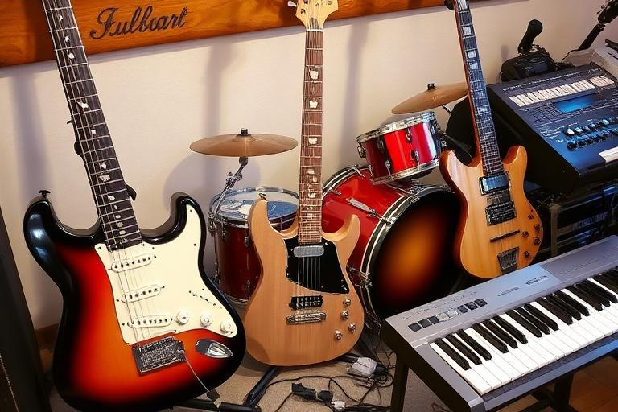

Player-made instruments
Luthiery & Instrument Crafting
Luthiery lets a character develop from a beginner instrument builder into a specialist maker of guitars and basses. You choose the shape, five major parts, materials, components, finish and colours, then your skills, workshop and choices determine the character of the finished instrument.

In brief
Develop Luthiery and its supporting skills, buy suitable materials, improve your workshop, select a compatible five-part recipe and craft the instrument you want. Quality comes from the whole build rather than one expensive ingredient. Finished instruments can develop useful characteristics and traits, be equipped and maintained, change owners and build a history of notable use.
The Luthiery skill path
Luthiery is the core crafting skill, supported by specialist knowledge that becomes increasingly important as builds become more ambitious.
Luthiery
Your main instrument-making progression. Higher ability opens more advanced shapes, materials and components.
Woodworking
Supports the wooden structure and construction qualities of the instrument.
Fretwork
Supports neck, fretboard and playability-focused craftsmanship.
Instrument electronics
Supports pickup and electronics choices, especially on more advanced builds.
Instrument finishing
Supports the finishing side of the craft and unlocks more advanced finish choices as you progress.
Use the normal RockMundo learning systems to develop these skills. The skill tree shows progression and unlocks so you can plan toward the type of instrument you want to make.
Your workshop
Your character has a Luthier workshop with its own quality level. The workshop can be upgraded with character funds, improving the environment in which future instruments are built. The Workshop screen shows the current quality, upgrade level, next cost and whether your available funds cover it.
Every instrument has five major parts
A crafted guitar or bass is assembled from five required part slots. Each slot needs a suitable owned material, while compatible component designs can further define the build.
Body
The main instrument body and one of the most visible material choices.
Neck
The structural connection between the body and playing surface.
Fretboard
A specialist playing surface with its own material options.
Electronics
Pickup/electronic choices help shape output and other characteristics.
Hardware
The practical fittings and hardware choices that complete the build.
Materials and components have unlock requirements and instrument compatibility. A valuable material is not automatically valid in every part or on every instrument.
Materials, components and shapes
The supplier catalogue ranges from accessible starter woods through rarer and more specialised materials. As your Luthiery develops, additional woods, decorative choices, components and body shapes become available.
- Check the required Luthiery level before buying materials for a planned build.
- Match materials to the part types they support.
- Check whether a component is compatible with guitar, bass or both.
- Do not spend scarce premium materials until you are happy with the complete recipe.
- Remember that the five selected materials are consumed when a successful craft is completed.
Building an instrument
The workshop is visual and part-by-part. Choose guitar or bass, select an unlocked body shape, work through the five part slots, then finish the appearance before confirming the build.
- Choose the instrument and shape. Start with the kind of instrument you actually want to use or sell.
- Build the five-part recipe. Select owned, compatible materials and optional components for each slot.
- Choose the finish. Finishing skill can unlock additional finish types as your character develops.
- Style it. Set the instrument name, primary/accent colours, hardware colour and surface sheen.
- Review rare materials. The workshop asks for confirmation before consuming especially scarce materials.
- Craft. The server verifies your current skills, workshop, unlocks and inventory before creating the permanent instrument.
Quality and craftsmanship
Finished quality is based on the overall craft: your Luthiery ability, relevant specialist skills, the selected materials/components, workshop quality and a small element of craftsmanship variation all matter. Quality is expressed through broad tiers from rough beginner work through increasingly accomplished professional and exceptional instruments.
Characteristics, traits and imperfections
Crafted instruments can develop characteristics such as tone, sustain, clarity, output, playability, reliability, durability and stage impact. Strong combinations can produce distinctive traits, while weaker craftsmanship can occasionally leave a repairable imperfection.
Traits make instruments feel different rather than simply ranking every item by one quality number. Some builds may lean toward sustain or stage impact, while others favour clean recording characteristics, playability or durability.
Reworking an imperfect instrument
Once your Luthiery is sufficiently developed, a crafted instrument with a repairable crafting imperfection can be reworked. Reworking is an improvement action rather than a way to repeatedly reroll an instrument until it becomes perfect, so use it on a build worth preserving.
Using and maintaining crafted instruments
Player-made instruments become real inventory items rather than disappearing into a crafting score. They can be equipped where appropriate and their condition matters over time. Maintenance restores condition for a cost, making a prized instrument something to look after rather than a permanent maintenance-free bonus.
The instrument keeps its maker identity, serial and build information so its origin remains meaningful after it changes hands.
Selling instruments and building a maker reputation
Luthiery connects to the player economy. Crafted instruments can be offered through Luthier shop/market systems, allowing another character to buy the actual item rather than a generic copy. Ownership transfers with the instrument while its provenance remains attached.
A maker can build reputation through the life of their instruments. Notable use, achievements and provenance can turn a well-made instrument into a more interesting object than its original quality score alone suggests.
Notable instruments and provenance
Crafted instruments can accumulate history when they are connected to important activity. Their record can preserve notable events and ownership, including meaningful performance or recording use where the relevant systems recognise it. This gives special instruments a story that can outlive the character who first made them.
Practical Luthiery tips
- Develop the supporting skills alongside core Luthiery instead of treating them as an afterthought.
- Use inexpensive materials while learning the system; save rare stock for builds that justify it.
- Plan the complete five-part recipe before buying or consuming premium materials.
- Upgrade the workshop as part of a wider progression plan rather than expecting it to replace skill.
- Build for a purpose: your own performance needs, a particular style of instrument or a market opportunity.
- Maintain instruments you actually use and pay attention to their developing history.